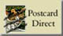

Postcard Direct Examples
This page is intended to show you a range of different ways you can use PD and give you ideas of how you can use it on your site.
If you have installed PD in non-default locations, or you have renamed the scripts, you will need to update all the links for these examples to work.
 Example One |
This example uses a simple thumbnail image, with the postcard using the full sized image. This is the most common way of using PD. If no form is specified in the link, the default form (form-default.txt) is used. |
 Example Two |
This example is the same as Example One, but using the form-basic.txt form template. The basic template has the options for music and postcard designs removed. |
 Example Three |
This example is same as Example One, but using the form-side.txt form template. The default form template has the form below the image. The form-side.txt form template has the form to the side of the image. |
 Example Four |
This example is same as Example One, but using the form-bcc.txt form template. This form has an additional field to allow the selection of a bcc option for multiple recipients. |
 Example Five |
This example is same as Example One, but using the form-traditional.txt form template. This form uses a hidden field to select the sending mode as "traditional". Note that this option can be set globally in the configuration file. |
 Example Six |
This example is same as Example One, but using the form-fields.txt form template. This template shows an example of using additional fields. |
 Example Seven |
This example is similar to example six, but using the form-colours.txt form template. This template shows an example of allowing a user to set the background and text colour. |
 Example Eight |
This example uses the form-date.txt form template. This template allows a user to send the card at a later date. |
 Example Nine |
This example uses the form-all.txt form template. This template uses most of the available features on one form. |
Some people prefer to allow users to select their image with radio buttons. This involves using a form to call /cgi-bin/pd/pd.cgi
If the image uploads have been enabled (disabled by default), the form is invoked with the URL /cgi-bin/pd/pd.cgi?upload=yes
You can edit all of the templates and configurations via the PD Admin Interface available at /cgi-bin/pd/pdadmin.cgi.
| The Postcard Direct documentation is available at http://postcard-direct.com/doco.html |
| The Postcard Direct FAQ is available at http://postcard-direct.com/faq.html |
| The Postcard Direct Support Forum is at http://www.ginini.com/support/ |
A product of Postcard Direct
